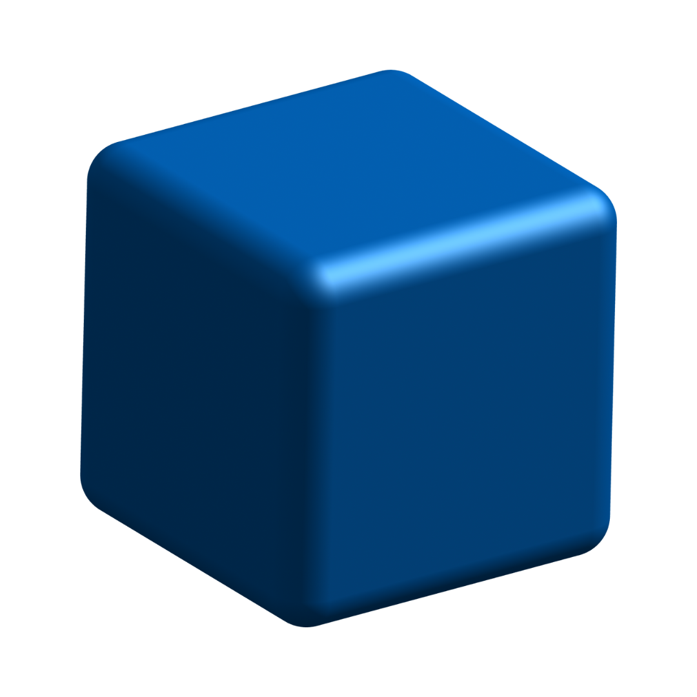
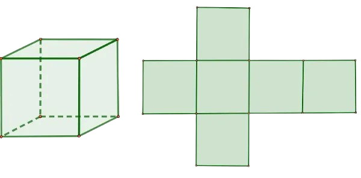

Cubo
O cubo, conhecido também como hexaedro, é um sólido geométrico que possui seis faces, todas elas formadas por quadrados. Além das 6 faces, o cubo possui 12 arestas e 8 vértices. Estudado na Geometria Espacial, o cubo possui todas as suas arestas congruentes e perpendiculares, logo ele é classificado como um poliedro regular. Podemos perceber a presença do formato de cubo no nosso cotidiano, em dados comuns utilizados em jogos, embalagens, caixas, entre outros objetos.
Planificação do cubo
Para calcular a área do cubo, é importante analisarmos sua planificação. A planificação do cubo é composta por 6 quadrados, todos congruentes entre si:
O cubo é composto por 2 bases quadradas, e a sua área lateral é composta por 4 quadrados, todos congruentes.
Área de um cubo
A área corresponde a quantidade de espaço (superfície) necessária para determinado objeto. Nesse caso, para calcular a área total do cubo, que possui 6 faces, utilizamos a seguinte fórmula:
At = 6a2
Sendo,
At: área total
a: aresta
Para tanto, a área lateral do cubo, ou seja, a soma das áreas dos quatro quadrados que formam esse poliedro regular, é calculada a partir da fórmula abaixo:
Al = 4a2
Sendo,
Al: área lateral
a: aresta
Além disso, é possível calcular a área da base do cubo, dada pela fórmula:
Ab = a2
Sendo,
Ab: área da base
a: aresta